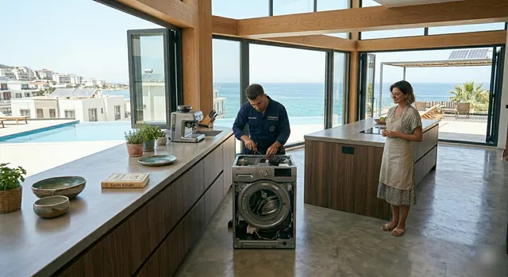

Beyaz Eşya Servisi
Çamaşır makinesi, bulaşık makinesi, kurutma makinesi, buzdolabı ve fırın arızaları.
- Su almama, boşaltmama, sıkmama
- Kapı kilidi, motor, kart arızası
- Soğutmama, buzlanma, ses
Çamaşır makinesi, bulaşık makinesi, buzdolabı, kombi ve klima arızalarında İzmir'in tüm merkez ilçelerine teknisyen gönderiyoruz. Ne yapılacağını ve kaça mal olacağını işe başlamadan öğrenirsiniz.

Bağımsız bir servisiz; yaygın markaların tümüne bakarız. Gelen teknisyen cihazı yerinde test eder, gerekiyorsa parçayı değiştirir ve cihazı yanınızda çalıştırır.

Çamaşır makinesi, bulaşık makinesi, kurutma makinesi, buzdolabı ve fırın arızaları.

Yanmayan, su ısıtmayan ya da sık hata veren kombiler için arıza tespiti ve yıllık bakım.

Soğutmayan, su damlatan ya da kötü koku yapan klimalar için bakım ve onarım.
Bazı arızalar basit bir ayarla çözülür. Aşağıdaki ilk adımı deneyin; sorun devam ederse arayın, teknisyene ne yaptığınızı söylemeniz tespiti hızlandırır.
| Belirti | Olası neden | İlk adım |
|---|---|---|
| ÇamaşırSu almıyor | Musluk kapalı, giriş filtresi tıkalı | Musluğu tam açın, hortum ucundaki süzgeci kontrol edin. |
| ÇamaşırSuyu boşaltmıyor | Pompa filtresinde yabancı cisim | Ön alttaki filtre kapağını açıp temizleyin (altına havlu koyun). |
| BulaşıkTemiz yıkamıyor | Tıkalı filtre veya pervane delikleri | Alt filtreyi çıkarıp yıkayın, pervane deliklerini kürdanla açın. |
| BuzdolabıSoğutmuyor | Termostat düşük, kapı contası açık | Ayarı kontrol edin, kapının tam kapandığından emin olun. |
| KombiBasınç 1 barın altında | Tesisatta su eksilmesi | Doldurma musluğundan 1,5 bara kadar su ekleyin; sık düşüyorsa kaçak vardır. |
| KombiEkranda hata kodu | Ateşleme, gaz veya basınç sorunu | Bir kez reset yapın; kod tekrar ediyorsa kodu not alıp arayın. |
| KlimaZayıf soğutuyor | Kirli filtre, eksik gaz | Ön kapağı açıp filtreleri yıkayın; düzelmezse gaz kontrolü gerekir. |
Cihazı, markayı ve belirtiyi anlatın; size uygun saati birlikte seçelim.
Teknisyen cihazı test eder, arızanın kaynağını size gösterir.
Yapılacak iş ve toplam ücret söylenir. Onay vermeden işlem yapılmaz.
Parça değişir, cihaz yanınızda çalıştırılır, fişiniz verilir.
Sürpriz fatura, belirsiz parça, kirlenen ev. Bunların hiçbiri olmasın diye her serviste aynı dört kuralı uygularız.
Tespitten sonra toplam tutarı öğrenirsiniz; onayınız olmadan iş başlamaz.
Çıkan eski parça size gösterilir, isterseniz sizde kalır.
Cihaz siz görmeden teslim edilmez; tam bir çalışma döngüsü denenir.
Çalışma alanına örtü serilir, iş bitince alan toplanır.
Teknisyen arızayı tespit eder, yapılacak işi ve toplam ücreti işe başlamadan söyler. Onay vermezseniz işlem yapılmaz.
Pazartesi–Cumartesi 08:30–20:00 arasında aradığınızda, ilçenize ve o günkü yoğunluğa göre çoğunlukla aynı gün ya da ertesi gün randevu verilir.
Evet. Çıkan eski parça size gösterilir, isterseniz yanınızda bırakılır.
Piyasadaki yaygın beyaz eşya, kombi ve klima markalarının tümüne bakılır. Bağımsız bir teknik servis olarak çalışırız.
Kombiyi ve elektrik düğmelerini kullanmayın, gaz vanasını kapatın, pencereleri açın ve 187 Doğalgaz Acil hattını arayın. Gaz kaçağı servis işi değil acil durumdur.
Takılan parça ve yapılan işçilik için garanti süresi işe başlamadan size söylenir ve fişe yazılır.
Telefonda cihazın markasını ve ne yaptığını söylemeniz yeterli.
0850 307 78 51Hizmet verdiğimiz ilçeler